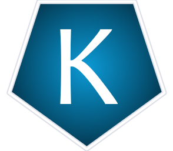
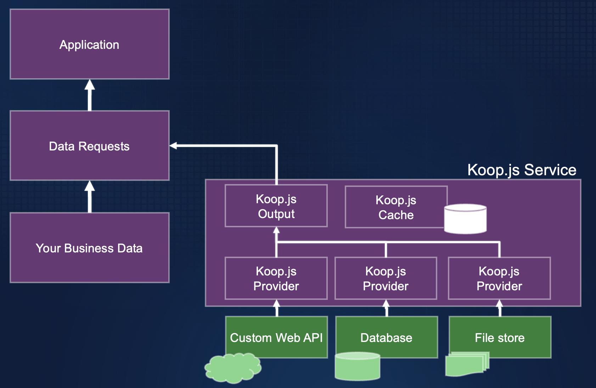
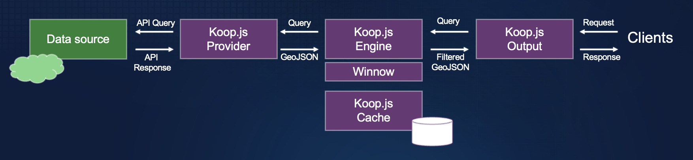
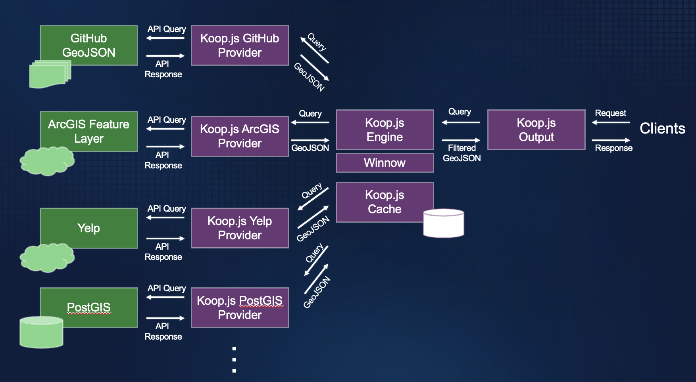

Koop.js
Open-Source, Geospatial API adapters
koopjs.github.ioAndrew Turner - October 2023
Who is Andrew?
- Esri since 2012, prior GeoIQ / GeoCommons
- CTO, ArcGIS Hub / Open-source strategy / Director, R+D DC
- Worked on various standards (GeoRSS, GeoJSON, KML, OpenSearch-Geo)
- Charter Member of OSGeo Foundation since 2008
- highearthorbit.com / github.com/ajturner
What is Koop.js?
How can I get up-to-date data I need into the formats I want?
API Adapters
How Koop works
Architecture
 Modular, extensible, plugin-based architectureTerminology
- Provider: connect to external API, Datastores
- Output: URI routes, query, response formats
- Core: Manages requests, translates Queries + Serialization to GeoJSON
- Cache: Optionally store interim results (DB, Redis, Files)
- Winnow: Apply SQL to GeoJSON in memory
Expand your server
How to Use Koop
$ npm install -g @koopjs/cli
$ koop new app demo-app && cd demo-app && npm i
$ koop add provider @koopjs/provider-github
✓ added provider-github
✓ registered provider-github
✓ done
$ koop serve
Output: OGC Features
$ koop add output @koopjs/output-ogcapi-features
✓ added output-ogcapi-features
✓ registered output-ogcapi-features
✓ done
$ npm run start
 Fetch from GitHub
/github/baltimoreheritage::geojson::baltimore-city-wards-1797/collections
Fetch from GitHub
/github/baltimoreheritage::geojson::baltimore-city-wards-1797/collections
Custom API example: Yelp!
$ koop add output @koopjs/provider-yelp
✓ added provider-yelp
✓ registered provider-yelp
✓ done
$ npm run start
 Fetch from Yelp
Fetch from Yelp
Available via URI Paths
registered cache: Cache v5.0.0
registered output: GeoServices v7.1.9
registered output: OGCAPIFeatures v0.2.2
"GeoServices" routes for the "github" provider:
ROUTE | [GET, POST] | /github/rest/info
ROUTE | [GET, POST] | /github/tokens/:method
ROUTE | [GET, POST] | /github/tokens
ROUTE | [GET, POST] | /github/rest/services/:id/FeatureServer/:layer/:method
ROUTE | [GET, POST] | /github/rest/services/:id/FeatureServer/layers
ROUTE | [GET, POST] | /github/rest/services/:id/FeatureServer/:layer
ROUTE | [GET, POST] | /github/rest/services/:id/FeatureServer
ROUTE | [GET, POST] | /github/rest/services/:id/FeatureServer*
ROUTE | [GET, POST] | /github/rest/services/:id/MapServer*
"OGCAPIFeatures" routes for the "github" provider:
ROUTE | [GET] | /github/conformance
ROUTE | [GET] | /github/:id/collections
ROUTE | [GET] | /github/:id/collections/:collectionId
ROUTE | [GET] | /github/:id/collections/:collectionId/items
ROUTE | [GET] | /github/:id/collections/:collectionId/items/:featureId
registered provider: github v3.0.0
"GeoServices" routes for the "koop-provider-yelp" provider:
ROUTE | [GET, POST] | /koop-provider-yelp/rest/info
ROUTE | [GET, POST] | /koop-provider-yelp/tokens/:method
ROUTE | [GET, POST] | /koop-provider-yelp/tokens
ROUTE | [GET, POST] | /koop-provider-yelp/rest/services/:id/FeatureServer/:layer/:method
ROUTE | [GET, POST] | /koop-provider-yelp/rest/services/:id/FeatureServer/layers
ROUTE | [GET, POST] | /koop-provider-yelp/rest/services/:id/FeatureServer/:layer
ROUTE | [GET, POST] | /koop-provider-yelp/rest/services/:id/FeatureServer
ROUTE | [GET, POST] | /koop-provider-yelp/rest/services/:id/FeatureServer*
ROUTE | [GET, POST] | /koop-provider-yelp/rest/services/:id/MapServer*
"OGCAPIFeatures" routes for the "koop-provider-yelp" provider:
ROUTE | [GET] | /koop-provider-yelp/conformance
ROUTE | [GET] | /koop-provider-yelp/:id/collections
ROUTE | [GET] | /koop-provider-yelp/:id/collections/:collectionId
ROUTE | [GET] | /koop-provider-yelp/:id/collections/:collectionId/items
ROUTE | [GET] | /koop-provider-yelp/:id/collections/:collectionId/items/:featureId
registered provider: koop-provider-yelp v1.0.0
Koop server listening at 443
Koop instance
const Koop = require('@koopjs/koop-core')
const koop = new Koop()
const provider = require('@koopjs/provider-github')
koop.register(provider, { /* provider options */ })
const output = require('@koopjs/output-ogcapi-features')
koop.register(output, { /* output options */ })
koop.server.listen(80)
Deploying Koop
- Docker
- Heroku
- AWS Lambda
How to extend Koop
Provider psuedo-code
// returns GeoJSON feature collection + metadata
githubModel.prototype.getData(request, callback) { ... }
const github = {
type: 'provider',
name: 'github',
Model: githubModel,
version: '1.0'
}Output psuedo-code
function getCollectionItems(request, response) {
// pass request through to Provider
this.model.pull(request, (error, geojson) => {
// convert GeoJSON to output format
const output = ...;
response.status(200).json( output );
})
}
const routes = [{
path: "$namespace/$providerParams/collections/:collectionId/items",
methods: ["get"],
handler: "getCollectionItems"
}];
const ogcapi = {
"type": "output",
"name": "ogcapi-features",
"routes": routes,
"version": 1,
"koopCompatibility": ">=3"
}Cache plugin
class Cache {
static pluginName = 'Memory Cache';
static type = 'cache';
static version = require('../package.json').version;
insert(key, geojson, options, callback) { ... }
retrieve(key, options, callback) { ... }
delete(key, callback) { ... }
}Winnow
Apply SQL to GeoJSON in memory
const statement = 'Select Trunk_Diameter from ? where Trunk_Diameter > 100'
winnow
.prepareSql(statement)
.filter(geojson)
winnow.query(features, {
geometry: {
xmin: 50,
ymin: 50,
xmax: 80,
ymax: 80,
spatialReference: {
wkid: '4326'
}
},
spatialPredicate: 'ST_Within'
});
Thank you!
- https://koopjs.github.io
- https://github.com/ajturner/koopjs-foss4g-2023
- More videos